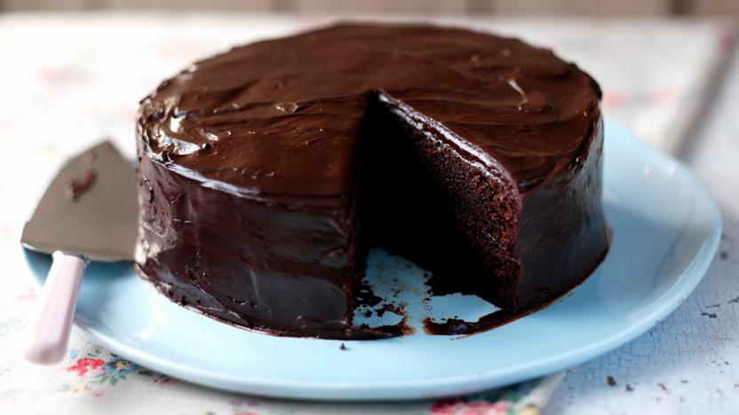

Chocolate Cake

An easy and delicious Chocolate Cake recipe that's sure to impress!
This incredible Chocolate Cake recipe is perfect for anyone who wants to make an impressive and delicious dessert that will delight your friends and family.
This recipe takes less than 1 hour to prepare and is incredibly easy to make. Here are the ingredients.
Ingredients
For the cake
- 200g golden caster sugar
- 200g unsalted butter
- 4 large eggs
- 200g self-raising flour
- 1 teaspoon baking powder
- ½ teaspoon vanilla extract
- 2 tablespoons milk
For the buttercream
- 100g milk chocolate(chopped)
- 200g butter(softened)
- 400g icing sugar
- 5 tablespoons cocoa powder
- 2 tablespoons milk
For the chocolate shards(optional)
- 50g dark chocolate
- 25g milk chocolate
- 25g white chocolate
Steps
- Heat oven to 190C / 170 fan / gas 5. Butter the base and sides of two 20cm round sandwich tins and line the bases with baking parchment.
- In a large bowl, beat together the sugar, butter, eggs, flour, cocoa powder, baking powder, vanilla extract, milk and a pinch of salt until pale.
- Divide the mixtures between the prepared tins. Bake for 20 mins or until a skewer inserted into the center of cake comes out clean.
- Leave to cool in the thin for 10 mins, then turn out onto a wire rack to cool completely.
- For the buttercream, put chopped milk chocolate in a heatproof bowl and melt in the microwave, stirring every 30 secs. Leave the melted chocolate to cool for 5 mins.
- Mash softened butter and icing sugar together with a fork, then switch to a wooden spoon or electric beaters, if you have them.
- Sift in cocoa powder with a pinch of salt and pour the melted chocolate and milk. Mix again until smooth.
- On a cake stand or large plate, sandwich the cakes together with half of the buttercream, then spread the rest on top. Decorate with chocolate shards, if you like.
- To make chocolate shards: melt dark chocolate and pour it onto a tray lined with baking parchment or foil.
- Now melt milk chocolate and white chocolate and drizzle them over the dark chocolate before it sets.
- Shake the tray gently to level the mixture then leave to set somewhere cool. Chop into shards.